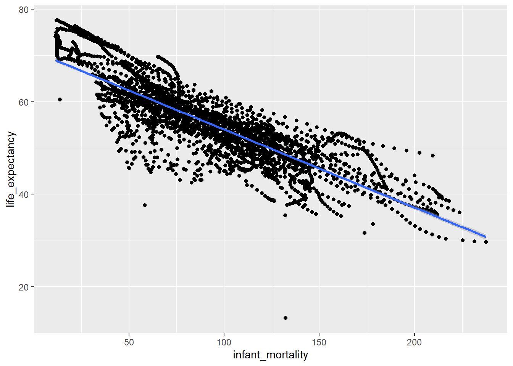
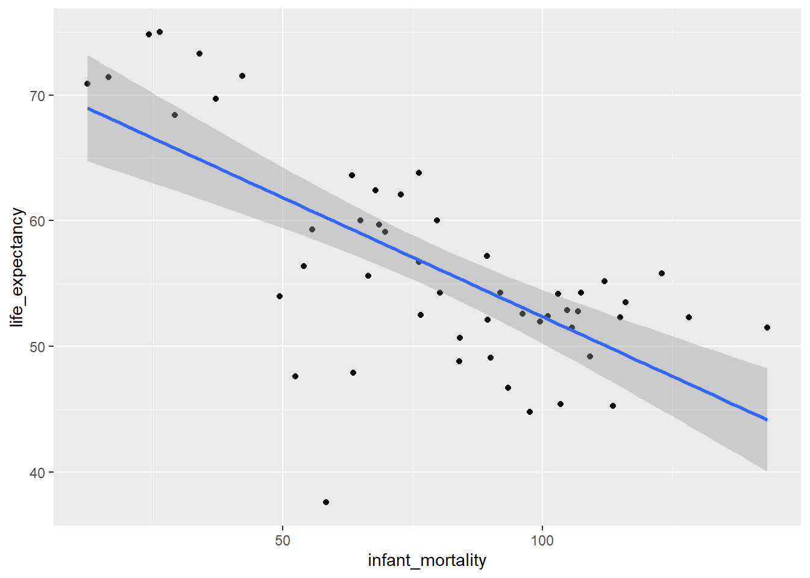
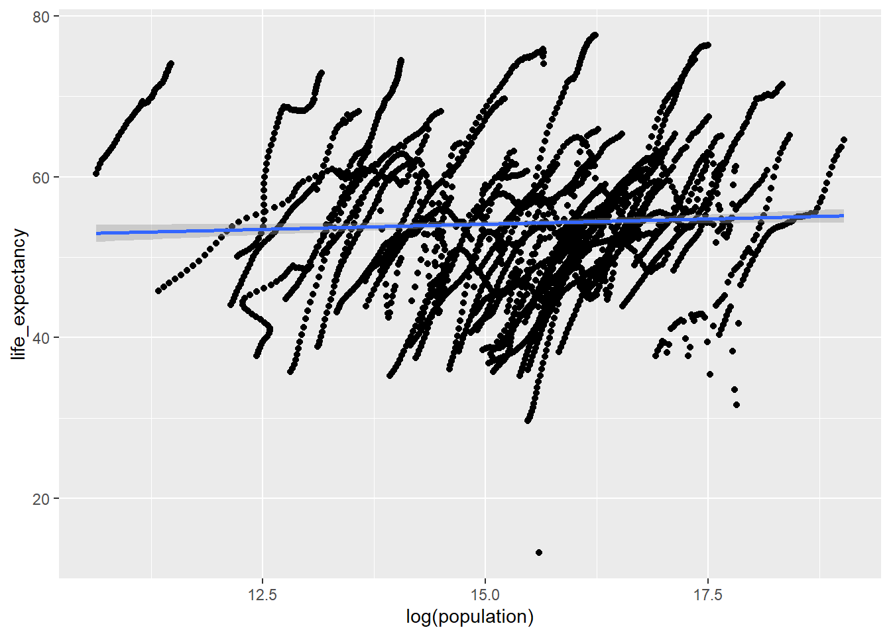
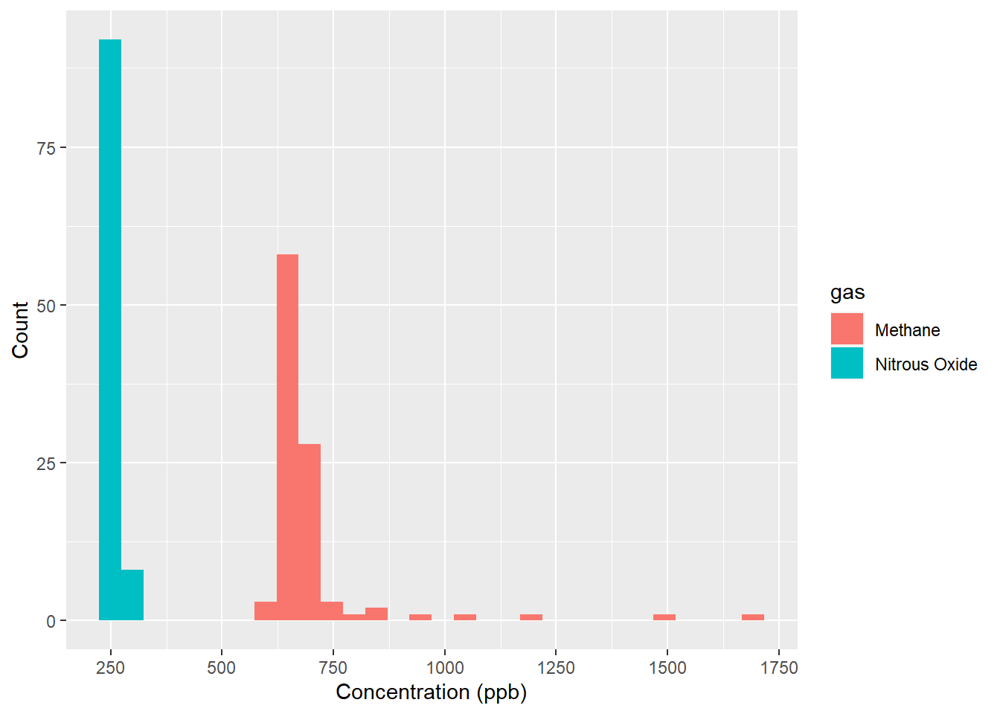
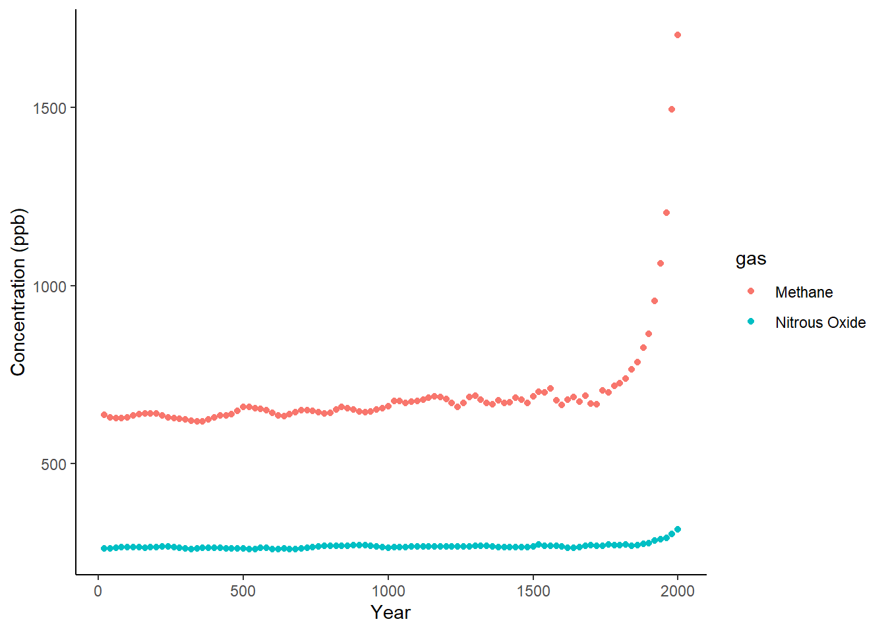

This exercise explores the relationship of life expectancy with child mortality and population in African countries using the ‘gapminder’dataset found in R’s ’dslabs’ package. It is noteworthy that once the ‘dslabs’ package is installed and loaded, the dataset is available immediately for analysis. The analysis leverages the comprehensive capabilities of the ‘’tidyverse’ package for data manipulation, visualization and analysis.
R’s help function provides insightful guidance on various datasets, including ‘gapminder’. For instance, executing ‘help(gapminder)’ in R prompts ‘??gapminder’, directing users to detailed information about this dataset.
#load dslabs packagelibrary("dslabs")
Warning: package 'dslabs' was built under R version 4.2.3
#look at help file for gapminder datahelp(gapminder)
starting httpd help server ... done
#load tidyverse pacakgelibrary(tidyverse)
Warning: package 'tidyverse' was built under R version 4.2.3
Warning: package 'ggplot2' was built under R version 4.2.3
Warning: package 'tibble' was built under R version 4.2.3
Warning: package 'tidyr' was built under R version 4.2.3
Warning: package 'readr' was built under R version 4.2.3
Warning: package 'purrr' was built under R version 4.2.3
Warning: package 'dplyr' was built under R version 4.2.3
Warning: package 'stringr' was built under R version 4.2.3
Warning: package 'forcats' was built under R version 4.2.3
Warning: package 'lubridate' was built under R version 4.2.3
── Attaching core tidyverse packages ──────────────────────── tidyverse 2.0.0 ──
✔ dplyr 1.1.3 ✔ readr 2.1.5
✔ forcats 1.0.0 ✔ stringr 1.5.0
✔ ggplot2 3.4.4 ✔ tibble 3.2.1
✔ lubridate 1.9.3 ✔ tidyr 1.3.0
✔ purrr 1.0.2
── Conflicts ────────────────────────────────────────── tidyverse_conflicts() ──
✖ dplyr::filter() masks stats::filter()
✖ dplyr::lag() masks stats::lag()
ℹ Use the conflicted package (<http://conflicted.r-lib.org/>) to force all conflicts to become errors
As exhibited in the help window, the ‘gapminder’ dataset contains health and income outcomes across 184 countries from 1960 to 2016, details of outcomes listed below.
country
year
infant_mortality. Infant deaths per 1000.
life_expectancy. Life expectancy in years.
fertility. Average number of children per woman.
population. Country population.
gpd. GDP according to World Bankdev.
continent
region. Geographical region.
The str function pulls the structure of the actual data. As we can see below, the ‘gapminder’ data has 10545 observation and 9 variables. There are five numerical variables, infant_mortality, life_expectancy, fertility, population and gdp; three factor variables, country, continent and region and one. The year is stored as an integer data type.
#get an overview of data structurestr(gapminder)
'data.frame': 10545 obs. of 9 variables:
$ country : Factor w/ 185 levels "Albania","Algeria",..: 1 2 3 4 5 6 7 8 9 10 ...
$ year : int 1960 1960 1960 1960 1960 1960 1960 1960 1960 1960 ...
$ infant_mortality: num 115.4 148.2 208 NA 59.9 ...
$ life_expectancy : num 62.9 47.5 36 63 65.4 ...
$ fertility : num 6.19 7.65 7.32 4.43 3.11 4.55 4.82 3.45 2.7 5.57 ...
$ population : num 1636054 11124892 5270844 54681 20619075 ...
$ gdp : num NA 1.38e+10 NA NA 1.08e+11 ...
$ continent : Factor w/ 5 levels "Africa","Americas",..: 4 1 1 2 2 3 2 5 4 3 ...
$ region : Factor w/ 22 levels "Australia and New Zealand",..: 19 11 10 2 15 21 2 1 22 21 ...
The summary(gapminder) provides statistical overview. For numerical columns, it presents minimum, maximum, mean, median, quartiles and missing values. For categorical or factor columns, it provides a count of the number of occurrences of each level. For example, there are 2907 observations related to the continent of Africa, 2052 related to Americas, 2679 related to Asia, 2223 related to Europe and 684 related to Ocenia.
#get a summary of datasummary(gapminder)
country year infant_mortality life_expectancy
Albania : 57 Min. :1960 Min. : 1.50 Min. :13.20
Algeria : 57 1st Qu.:1974 1st Qu.: 16.00 1st Qu.:57.50
Angola : 57 Median :1988 Median : 41.50 Median :67.54
Antigua and Barbuda: 57 Mean :1988 Mean : 55.31 Mean :64.81
Argentina : 57 3rd Qu.:2002 3rd Qu.: 85.10 3rd Qu.:73.00
Armenia : 57 Max. :2016 Max. :276.90 Max. :83.90
(Other) :10203 NA's :1453
fertility population gdp continent
Min. :0.840 Min. :3.124e+04 Min. :4.040e+07 Africa :2907
1st Qu.:2.200 1st Qu.:1.333e+06 1st Qu.:1.846e+09 Americas:2052
Median :3.750 Median :5.009e+06 Median :7.794e+09 Asia :2679
Mean :4.084 Mean :2.701e+07 Mean :1.480e+11 Europe :2223
3rd Qu.:6.000 3rd Qu.:1.523e+07 3rd Qu.:5.540e+10 Oceania : 684
Max. :9.220 Max. :1.376e+09 Max. :1.174e+13
NA's :187 NA's :185 NA's :2972
region
Western Asia :1026
Eastern Africa : 912
Western Africa : 912
Caribbean : 741
South America : 684
Southern Europe: 684
(Other) :5586
It is important to find out the class or type of an object in R before applying any functions and operations. Determining the object’s class with ‘class(gapminder)’ confirms that ‘gapminder’ is a ‘data.frame’, indicative of its tabular structure in R.
#determine the type of object gapminder isclass(gapminder)
[1] "data.frame"
In the next step of analysis, a subset named ‘africadata’ is created, containing only observations related to African countries.
#Assigning only the African countries to a new object/variable called africadataafricadata <- gapminder[gapminder$continent =="Africa", ]
Examining ‘africadata’ with str(africadata) shows a reduction to 2907 observations. However, summary(africadata) still includes other continent categories, with zero counts. This peculiarity arises because R retains factor levels in subsets even when no observations exist for certain categories.
#Running str for africadatastr(africadata)
'data.frame': 2907 obs. of 9 variables:
$ country : Factor w/ 185 levels "Albania","Algeria",..: 2 3 18 22 26 27 29 31 32 33 ...
$ year : int 1960 1960 1960 1960 1960 1960 1960 1960 1960 1960 ...
$ infant_mortality: num 148 208 187 116 161 ...
$ life_expectancy : num 47.5 36 38.3 50.3 35.2 ...
$ fertility : num 7.65 7.32 6.28 6.62 6.29 6.95 5.65 6.89 5.84 6.25 ...
$ population : num 11124892 5270844 2431620 524029 4829291 ...
$ gdp : num 1.38e+10 NA 6.22e+08 1.24e+08 5.97e+08 ...
$ continent : Factor w/ 5 levels "Africa","Americas",..: 1 1 1 1 1 1 1 1 1 1 ...
$ region : Factor w/ 22 levels "Australia and New Zealand",..: 11 10 20 17 20 5 10 20 10 10 ...
#Summary of africadatasummary(africadata)
country year infant_mortality life_expectancy
Algeria : 57 Min. :1960 Min. : 11.40 Min. :13.20
Angola : 57 1st Qu.:1974 1st Qu.: 62.20 1st Qu.:48.23
Benin : 57 Median :1988 Median : 93.40 Median :53.98
Botswana : 57 Mean :1988 Mean : 95.12 Mean :54.38
Burkina Faso: 57 3rd Qu.:2002 3rd Qu.:124.70 3rd Qu.:60.10
Burundi : 57 Max. :2016 Max. :237.40 Max. :77.60
(Other) :2565 NA's :226
fertility population gdp continent
Min. :1.500 Min. : 41538 Min. :4.659e+07 Africa :2907
1st Qu.:5.160 1st Qu.: 1605232 1st Qu.:8.373e+08 Americas: 0
Median :6.160 Median : 5570982 Median :2.448e+09 Asia : 0
Mean :5.851 Mean : 12235961 Mean :9.346e+09 Europe : 0
3rd Qu.:6.860 3rd Qu.: 13888152 3rd Qu.:6.552e+09 Oceania : 0
Max. :8.450 Max. :182201962 Max. :1.935e+11
NA's :51 NA's :51 NA's :637
region
Eastern Africa :912
Western Africa :912
Middle Africa :456
Northern Africa :342
Southern Africa :285
Australia and New Zealand: 0
(Other) : 0
Further analysis involves creating two subsets from ‘africadata’: ‘africa_infant_life’ with ‘infant_mortality’ and ‘life_expectancy’, and ‘africa_pop_life’ with ‘population’ and ‘life_expectancy’.
#Creating africa_infant_life which is a subset of africadata containing only 'infant_mortality' and 'life_expectancy'africa_infant_life <- africadata[,c("infant_mortality", "life_expectancy")]
The structures and summaries reveal africa_infant_life has two columns, 2907 observations, and 226 missing values in infant_mortality.
#Running str for africa_infant_lifestr(africa_infant_life)
'data.frame': 2907 obs. of 2 variables:
$ infant_mortality: num 148 208 187 116 161 ...
$ life_expectancy : num 47.5 36 38.3 50.3 35.2 ...
#Summary of africa_infant_lifesummary(africa_infant_life)
infant_mortality life_expectancy
Min. : 11.40 Min. :13.20
1st Qu.: 62.20 1st Qu.:48.23
Median : 93.40 Median :53.98
Mean : 95.12 Mean :54.38
3rd Qu.:124.70 3rd Qu.:60.10
Max. :237.40 Max. :77.60
NA's :226
#Creating africa_pop_life which is a subset of africadata containing only population and life_expectancyafrica_pop_life <- africadata[,c("population", "life_expectancy")]
Likewise, the str function of africa_pop_life showed that this object also has 2907 observations and two columns. The summary function presented various quartile levels.
#Running str for africa_pop_lifestr(africa_pop_life)
'data.frame': 2907 obs. of 2 variables:
$ population : num 11124892 5270844 2431620 524029 4829291 ...
$ life_expectancy: num 47.5 36 38.3 50.3 35.2 ...
#Summary of africa_pop_lifesummary(africa_pop_life)
population life_expectancy
Min. : 41538 Min. :13.20
1st Qu.: 1605232 1st Qu.:48.23
Median : 5570982 Median :53.98
Mean : 12235961 Mean :54.38
3rd Qu.: 13888152 3rd Qu.:60.10
Max. :182201962 Max. :77.60
NA's :51
Plotting life expectancy against infant mortality in ‘africa_infant_life’ displays an expected negative correlation.
#Plotting expectancy as a function of infant mortalityp1 <- africa_infant_life %>%ggplot(aes(x=infant_mortality, y=life_expectancy)) +geom_point() +geom_smooth(method='lm')plot(p1)

Plotting life expectancy against the log of population in ‘africa_pop_life’ reveals intriguing streaks. This pattern exists because africadata contains multiple years of data on population and life expectancy for multiple countries in Africa. Each ‘streak’ might be hinting at a positive correlation between life expectancy and population within individual country over multiple years.
#Plotting life expectancy as a function of log of population for the africa_pop_lifep2 <- africa_pop_life %>%ggplot(aes(x=log(population), y=life_expectancy)) +geom_point() +geom_smooth(method='lm')plot(p2)
Next step is to inspect if this pattern persists even when only one year’s data with least missing values is visualized. As noticed in the summary of africadata, 226 values are missing for infant_mortality in this object. To find years with least missing values for infant mortality, following code is run. The result shows that in the object ‘africadata’, the values for infant_mortality is missing from 1960 to 1981 and again in 2016.
#Codes to explore which years have missing data for infant mortalitymissing_infmort_years <- africadata %>%filter(is.na(infant_mortality)) %>%select(year) %>%distinct() %>%arrange(year)print(missing_infmort_years)
The year 2000 is identified as a year without missing values to create a subset ‘africadata_2000’ from the object ‘africadata’. This new subset includes only the data for the Year 2000.
#Creating africadata_2000 which is a subset of africadata containing data for the year 2000 only. africadata_2000 <- africadata %>%filter(year ==2000)
The results of the str function on africadata_2000 reveals that this object contains only 51 observations and 9 variables.
#Running str for africadata_2000str(africadata_2000)
'data.frame': 51 obs. of 9 variables:
$ country : Factor w/ 185 levels "Albania","Algeria",..: 2 3 18 22 26 27 29 31 32 33 ...
$ year : int 2000 2000 2000 2000 2000 2000 2000 2000 2000 2000 ...
$ infant_mortality: num 33.9 128.3 89.3 52.4 96.2 ...
$ life_expectancy : num 73.3 52.3 57.2 47.6 52.6 46.7 54.3 68.4 45.3 51.5 ...
$ fertility : num 2.51 6.84 5.98 3.41 6.59 7.06 5.62 3.7 5.45 7.35 ...
$ population : num 31183658 15058638 6949366 1736579 11607944 ...
$ gdp : num 5.48e+10 9.13e+09 2.25e+09 5.63e+09 2.61e+09 ...
$ continent : Factor w/ 5 levels "Africa","Americas",..: 1 1 1 1 1 1 1 1 1 1 ...
$ region : Factor w/ 22 levels "Australia and New Zealand",..: 11 10 20 17 20 5 10 20 10 10 ...
#Running summary for africadata_2000summary(africadata_2000)
country year infant_mortality life_expectancy
Algeria : 1 Min. :2000 Min. : 12.30 Min. :37.60
Angola : 1 1st Qu.:2000 1st Qu.: 60.80 1st Qu.:51.75
Benin : 1 Median :2000 Median : 80.30 Median :54.30
Botswana : 1 Mean :2000 Mean : 78.93 Mean :56.36
Burkina Faso: 1 3rd Qu.:2000 3rd Qu.:103.30 3rd Qu.:60.00
Burundi : 1 Max. :2000 Max. :143.30 Max. :75.00
(Other) :45
fertility population gdp continent
Min. :1.990 Min. : 81154 Min. :2.019e+08 Africa :51
1st Qu.:4.150 1st Qu.: 2304687 1st Qu.:1.274e+09 Americas: 0
Median :5.550 Median : 8799165 Median :3.238e+09 Asia : 0
Mean :5.156 Mean : 15659800 Mean :1.155e+10 Europe : 0
3rd Qu.:5.960 3rd Qu.: 17391242 3rd Qu.:8.654e+09 Oceania : 0
Max. :7.730 Max. :122876723 Max. :1.329e+11
region
Eastern Africa :16
Western Africa :16
Middle Africa : 8
Northern Africa : 6
Southern Africa : 5
Australia and New Zealand: 0
(Other) : 0
Plotting life_expectancy as a function of infant_mortality for ‘africadata_2000’ again revealed a negative correlation between infant mortality and life expectancy.
#Plotting life expectancy as a function of infant mortality for the africadata_2000.p3 <- africadata_2000 %>%ggplot(aes(x=infant_mortality, y=life_expectancy)) +geom_point() +geom_smooth(method='lm')plot(p3)

Likewise, plotting life_expectancy as a function of log of population for ‘africadata_2000’ still produces streaks following the pattern of the aficadata plot.
#Plotting life expectancy as a function of log of population for the africadata_2000p4 <- africadata_2000 %>%ggplot(aes(x=log(population), y=life_expectancy)) +geom_point() +geom_smooth(method='lm')plot(p2)

Next step is fitting of some simple models using africadata_2000. First a linear model (fit1) is fitted using life expectancy as outcome and infant mortality as predictor.
Based on the p-value of fit1 which is less than 0.001, infant_mortality is a significant predictor of life expectancy in the African countries. IN the African countries, one infant mortality in one thousand infants decreases the life expectancy by approximately 0.19 years on an average.
#Printing the results of the linear model fit1summary(fit1)
Call:
lm(formula = life_expectancy ~ infant_mortality, data = africadata_2000)
Residuals:
Min 1Q Median 3Q Max
-22.6651 -3.7087 0.9914 4.0408 8.6817
Coefficients:
Estimate Std. Error t value Pr(>|t|)
(Intercept) 71.29331 2.42611 29.386 < 2e-16 ***
infant_mortality -0.18916 0.02869 -6.594 2.83e-08 ***
---
Signif. codes: 0 '***' 0.001 '**' 0.01 '*' 0.05 '.' 0.1 ' ' 1
Residual standard error: 6.221 on 49 degrees of freedom
Multiple R-squared: 0.4701, Adjusted R-squared: 0.4593
F-statistic: 43.48 on 1 and 49 DF, p-value: 2.826e-08
Subsequent step is fitting of linear model (fit2) using life expectancy as outcome and population as predictor.
The p-value (0.616) of population in the model fit2 is larger than 0.1. Hence, population is not a significant predictor of life expectancy in the African countries.
#Printing the results of the linear model fit2summary(fit2)
Call:
lm(formula = life_expectancy ~ population, data = africadata_2000)
Residuals:
Min 1Q Median 3Q Max
-18.429 -4.602 -2.568 3.800 18.802
Coefficients:
Estimate Std. Error t value Pr(>|t|)
(Intercept) 5.593e+01 1.468e+00 38.097 <2e-16 ***
population 2.756e-08 5.459e-08 0.505 0.616
---
Signif. codes: 0 '***' 0.001 '**' 0.01 '*' 0.05 '.' 0.1 ' ' 1
Residual standard error: 8.524 on 49 degrees of freedom
Multiple R-squared: 0.005176, Adjusted R-squared: -0.01513
F-statistic: 0.2549 on 1 and 49 DF, p-value: 0.6159
This section is a contribution by Erick Mollinedo
For the next part of this exercise I decided to work on the greenhouse_gases dataset from the dslabs package. The following space has the packages I used.
library(dslabs)library(tidyverse)
Then, I used the str() function to explore the structure of the dataframe and summary() to check the summary for each one of the variables of this dataframe.
#Explore the 'greenhouse_gases' dataframe using the 'str()' and 'summary()' functionsstr(greenhouse_gases)
'data.frame': 300 obs. of 3 variables:
$ year : num 20 40 60 80 100 120 140 160 180 200 ...
$ gas : chr "CO2" "CO2" "CO2" "CO2" ...
$ concentration: num 278 278 277 277 278 ...
summary(greenhouse_gases)
year gas concentration
Min. : 20 Length:300 Min. : 260.0
1st Qu.: 515 Class :character 1st Qu.: 269.7
Median :1010 Mode :character Median : 279.7
Mean :1010 Mean : 416.2
3rd Qu.:1505 3rd Qu.: 641.0
Max. :2000 Max. :1703.4
This dataset consists of 300 observations by 3 variables: The years go from 1 to 2000 (CE) in 20 years intervals in the variable year. The gas variable lists three gases: CO2, CH4 and N2O, and the variable concentration describes the gas concentration in ppm (CO2) or ppb (CH4, N2O).
In this case, I was just interested in the concentrations of methane and nitrous oxide, so I created a new object gases that includes only the CH4 and N2O observations.
#Used the `filter()` function to select only the observations needed from the variable `gas`. To do this I used the | operator which means "OR". In this case filtering for CH4 OR N2Ogases <- greenhouse_gases %>%filter(gas =="CH4"| gas =="N2O")
I decided to rename the values of ‘CH4’ to ‘Methane’ and ‘N2O’ to ‘Nitrous Oxide’ using the mutate() and recode() functions. And then used str() to check if the changes were applied to the dataframe.
#Here I am keeping the variable `gas` the same, but renaming CH4 to "Methane" and N2O to "Nitrous Oxide" using the `recode()` function.gases <- gases %>%mutate(gas =recode(gas, "CH4"="Methane","N2O"="Nitrous Oxide"))#And now using `str()` to check if the changes to this dataframe have been appliedstr(gases)
'data.frame': 200 obs. of 3 variables:
$ year : num 20 40 60 80 100 120 140 160 180 200 ...
$ gas : chr "Methane" "Methane" "Methane" "Methane" ...
$ concentration: num 638 631 628 628 631 ...
First, I just wanted to explore what were the concentrations observed for both gases, to see if there is a chance they remained constant through time. To do this I used ggplot() and set to a histogram with geom_histogram()
ggplot(gases, aes(x= concentration, fill= gas))+#Here I selected the dataset `gases`, then I set `concentration` to the x-axis and sepparated by type of gas using different colors using `fill=gas`geom_histogram()+#Set the geometry to histogramscale_x_continuous(breaks =seq(0, 1800, 250))+#Added more labels to the x-axislabs(x="Concentration (ppb)", y="Count") #Changed the x and y-axis titles
`stat_bin()` using `bins = 30`. Pick better value with `binwidth`.

Based on the previous plot, it is observed that most of the concentrations from Nitrous oxide are around 230 and 310 ppb, and for Methane most of them are between 600 and 750 ppb, but there are a few high concentrations. So, I decided to explore the trends from both gases through time, maybe the highest concentrations for Methane are from recent years. I created a plot that shows both gases using the ggplot() package using the geom_point() geometry.
ggplot(gases, aes(x= year, y= concentration, color= gas))+#Here I selected the `gases` dataset, then plotted `year` in the x-axis and `concentration` in the y-axis. I used `color= gas`, so both gases are separated in the same graphgeom_point()+#Used the point geometrylabs(x="Year", y="Concentration (ppb)")+#Changed the x and y-axis labelstheme_classic() #I decided to use a different theme for this plot, to make it more visually appealing

Based on the graph, it is observed that the concentration of both gases remain almost constant. However, around the year 1700, the concentration of methane started to increase and has remained high until the year 2000. For nitrous oxide, the concentration is also observed to increase around the year 1800.
It seems that the increase is related to the same historical event, which could be the industrialization that began around the 18th century. To explore if both gases are related and try to find a causal explanation I decided to do a simple correlation test, using the cor() function. But first I created the new objects CH4 and N2O to perform the test.
#First I separated both gases into separate objects using the `filter()` function then I pulled only the `concentration` variable using the `pull()` function. I asssigned them to their respective objects.CH4 <- gases %>%filter(gas =="Methane") %>%pull(concentration)N2O <- gases %>%filter(gas =="Nitrous Oxide") %>%pull(concentration)#Then I checked if the new objects were correctly saved using the `summary()` function.summary(CH4)
Min. 1st Qu. Median Mean 3rd Qu. Max.
618.7 641.3 661.5 697.9 686.0 1703.4
summary(N2O)
Min. 1st Qu. Median Mean 3rd Qu. Max.
260.0 264.5 267.4 268.5 269.7 315.4
And now perform the correlation test using the ‘Pearson’ method from the cor() function
cor(CH4, N2O, method ="pearson")
[1] 0.9391766
It is observed that both gases are highly correlated (r= 0.939), so this could mean that the increase in the concentration in the last two to three centuries could be due to the same reason. Industrialization could be the main cause for this, but other statistical analysis and more environmental parameters can aid to infer the causality.